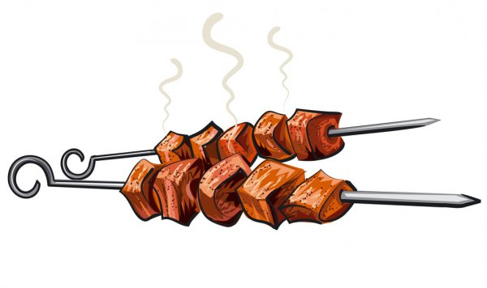

Интересные факты о шашлыке

Происхождение слова шашлык
Слово «шашлык» предположительно пришло в русский язык от крымских татар примерно в 18 веке, но при этом было очень сильно изменено. «Шиш» означает вертел, а «шишлык» — вертеть/жарить на вертеле. Некоторые относят его к тюркам, у которых есть слово «шалыг»: «ша» — плоть; «лыг» — резать.
В различных странах одно и то же блюдо называется по-разному.
- Так, в Болгарии его называют «шиш-кебаб»
- в Грузии – «мцвади»
- в Армении – «хоровац»
- в Греции – «сувлаки»
- в Румынии – «грэтар»
- на Мадейре – «эшпетада»
- в Японии – «кусияки»
- а в Молдавии – «кырнэцеи»
- в Америке – «барбекю»
- в Корее - «орикогикуи»
- в Бразилии - «шураска»
- во франкоязычной Северной Африке - «брошетс»
Запах, исходящий от шашлыка, поджаривающегося на мангале, – это запах витамина В1. По крайней мере, так говорят гурманы.
А врачи им особо не возражают и еще добавляют, что свойства витамина В1 очень ценны. Он улучшает работу мозга, нормализует настроение, замедляет процессы старения и даже уменьшает зубную боль.
Первую шашлычную в Париже открыл Александр Дюма после того, как в 1858 году попробовал это блюдо на Кавказе.
Французский писатель пришёл в восторг от его вкуса и решил немедленно организовать на родине шашлычную, чтобы и другие французы смогли оценить сочное мясо, поджаренное на огне до хрустящей корочки.
В Таджикистане в 2002 году была выпущена почтовая марка, на которой изображен старик, готовящий шашлык.
Она стала предметом мечтаний многих филателистов.
К мясному шашлыку следует подавать сухие красные вина. К столу должно подаваться вино комнатной температуры. Красные вина не охлаждают даже в жару.
Запивать шашлык из птицы нужно только сухим белым вином. Оно особенно подчеркивает вкус этих блюд. При этом, белые вина и зимой и летом следует подавать к столу охлажденными. В отличие от красного, белое вино — очень легкое, поэтому нужно запастись достаточным количеством для всех.